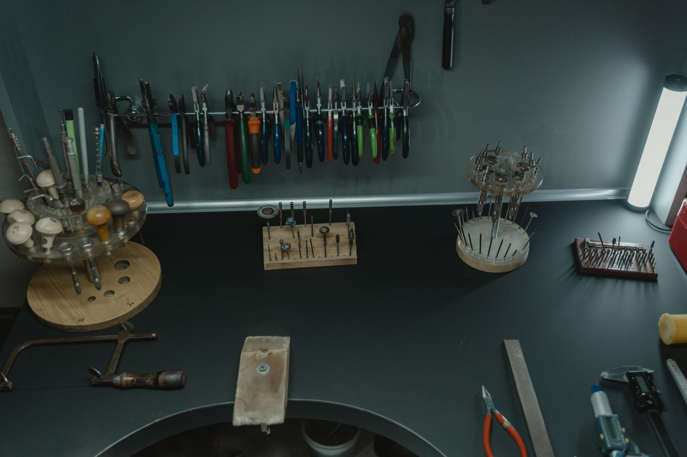
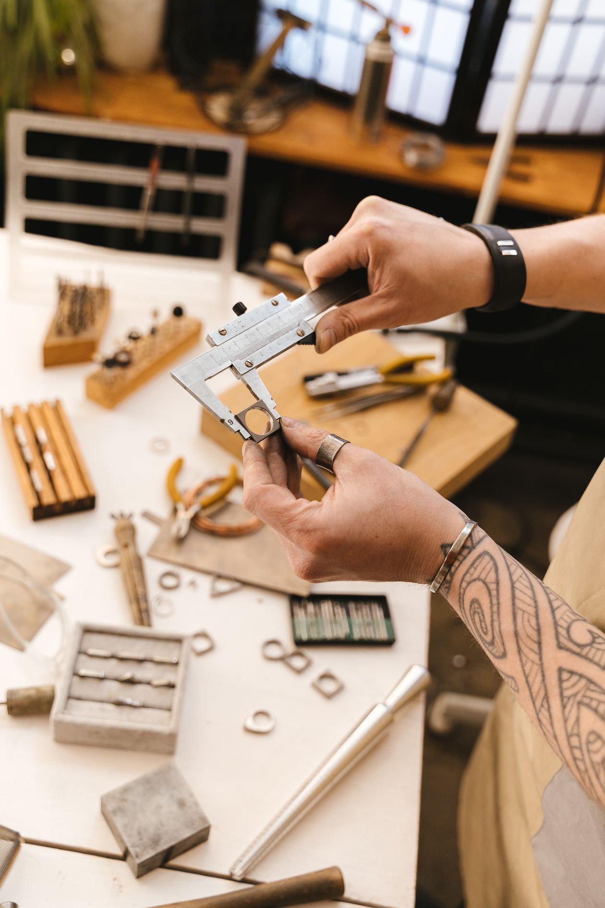
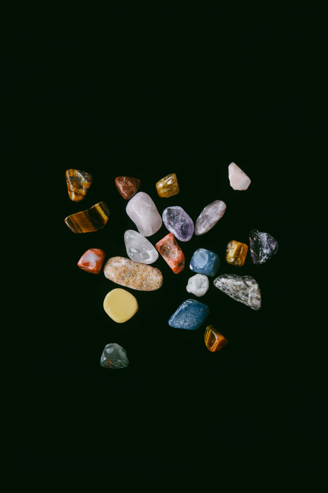

About the setter
Third generation at the same bench
I learned kundan the way it is usually learned in Johari Bazaar: by sitting next to someone. My grandfather set stones in this lane for fifty years; my father lasted two before going into the gem trade, so the bench skipped a generation and came to me. I started at fourteen, sorting foil offcuts. I set my first stone alone at nineteen — a small polki, still slightly crooked, which my grandfather refused to correct so I would remember it.
The atelier is one room above the lane: a bench, a lamp, a tray, and a wall of small drawers. Two karigars work with me on large bridal sets; everything small enough for one pair of hands is mine alone. We take on about thirty commissions a year and turn away roughly a third of what we are offered — usually because the stones are not sound, occasionally because the deadline is.
What kundan actually is. A stone is not gripped by claws or glued into a socket. A ribbon of pure, soft gold foil is worked around the stone over a core of lac, and the foil — burnished by hand — is what holds it. Done well, a kundan setting outlives its wearer; the necklaces that come to me for restoration are ninety years old and fail at the cord, not the cups. Done badly, the foil is thin, the seat is shallow, and the stone is lost at the first wedding it attends.
My one rule. I will not set a stone I cannot seat properly. Nine stones were refused at this bench in 2025 and returned to their owners with the reason written down. It costs me work every year. It has never cost a client a stone.
- Training: family bench, Johari Bazaar; two years of meenakari study with a master enameller in the old city
- Member: Jaipur Jewellers Association; Gem & Jewellery Export Promotion Council (GJEPC)
- Hallmarking: all gold work sold with BIS hallmark and a written stone map
- Bench book: open for weddings from March 2027; two slots remain


The stones
What comes across the tray

Polki are diamonds left uncut and unpolished on top — flat-backed slices that glow rather than sparkle. They are the heart of Jaipur kundan and the least forgiving stone I set: every one is a different shape, so every cup is a one-off.
Emerald and ruby arrive both faceted and as cabochons. Emerald is brittle at the edges and is set with a lighter hand; a chipped girdle is the commonest reason I refuse a stone.
Pearl is priced on the same rate card and set the same way, but it never goes near heat or perfume afterwards — which brings us to care.
Caring for a kundan piece. Keep it dry: water creeps under foil and dulls it. Perfume and hairspray go on before the jewellery, never after. Store the piece flat, in the cloth pouch it came with, away from other jewellery. Bring it back once a year and I will check every seat under the lamp, free, for as long as I am at this bench.
Repairs. Loose stones, broken cords and dull foil are bench work, not disasters. Assessment is ₹2,500, taken off the bill if the repair goes ahead. Pieces made elsewhere are welcome; pieces I judge unsafe to wear are returned with the reason in writing.